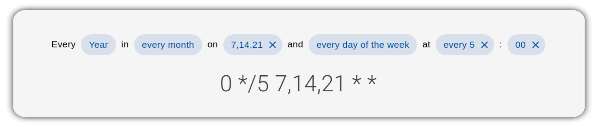

Documentation
vue-js-cron



generate cron expressions using Vue.js
Getting Started
Vue v3: documentation
Vue v2: documentation
Packages
This monorepo includes the following packages:
- core - a renderless Vue.js component to generate cron expressions.
- light - a lightweight cron editor without external dependencies
- vuetify - Vuetify component to edit cron expressions.
- element-plus - Element Plus component
- ant - Ant Design Vue component
- quasar - Quasar component
- docs - Vue.js Cron documentation powered by VuePress
Contributing and Development
Please have a look at CONTRIBUTING.md
Contributors
Attribution
This component is inspired by react-js-cron and jqcron
Articles
Renderless Components in Vue.js by Adam Wathan
Composition API v Renderless Components by Thomas Ferro